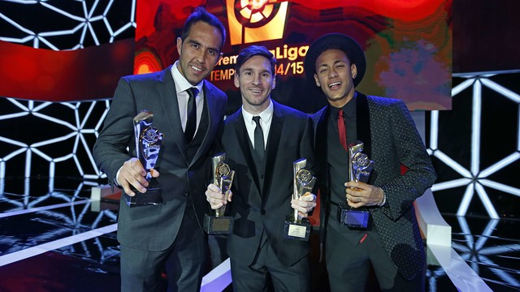

Τίτλοι και διακρίσεις Του Neymar

Τίτλοι
Με συλλόγους
- Σάντος
- Καμπεονάτο Παουλίστα: 2010, 2011, 2012
- Κύπελλο Βραζιλίας: 2010
- Κόπα Λιμπερταδόρες: 2011
- Ρεκόπα Σουδαμερικάνα: 2012
- Μπαρτσελόνα
- Πρωτάθλημα Ισπανίας: 2014–15, 2015–16
- Κύπελλο Ισπανίας: 2014–15, 2015–16, 2016–17
- Σούπερ Καπ Ισπανίας: 2013
- Τσάμπιονς Λιγκ: 2014–15
- Παγκόσμιο Κύπελλο Συλλόγων: 2015
- Παρί Σεν Ζερμέν
- Πρωτάθλημα Γαλλίας: 2017–18, 2018–19, 2019–20
- Κύπελλο Γαλλίας: 2017–18, 2019–20, 2020–21
- Λιγκ Καπ Γαλλίας: 2017–18, 2019–20
- Σούπερ Καπ Γαλλίας: 2018, 2020
Με Βραζιλία
- Βραζιλία Κ-20
- Πρωτάθλημα Ποδοσφαίρου Κ-20 της Νοτίου Αμερικής
- Αργυρός Ολυμπιονίκης: 2012
- Χρυσός Ολυμπιονίκης: 2016
- Κύπελλο Συνομοσπονδιών ΦΙΦΑ: 2013